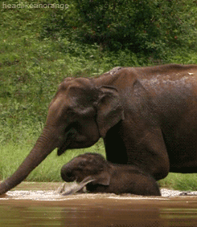
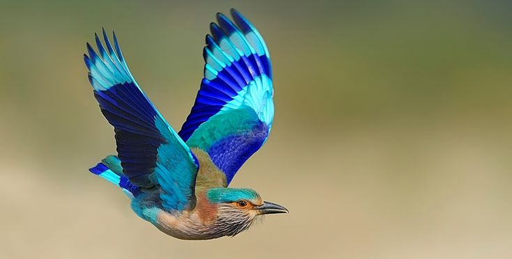
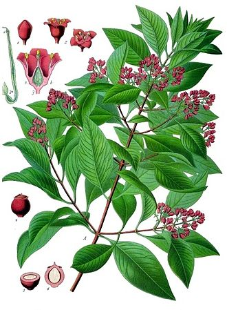

Karnataka formerly Mysore State is a state in the southwestern region of India
. It was formed as Mysore State on 1 November 1956, with the passage of the States Reorganisation Act and renamed Karnataka in 1973. The state corresponds to the Carnatic region. Its capital and largest city is Bengaluru.
Karnataka is bordered by the eighth-largest state by population
, comprising 31 districts. Kannada, one of the classical languages of India, is the most widely spoken and official language of the state
The Indian elephant (Elephas maximus indicus) is one of four[citation needed] extant recognised subspecies of the Asian elephant and native to mainland Asia. Since 1986, the Asian elephant has been listed as Endangered on the IUCN Red List. as the wild population has declined by at least 50% since the 1930s to 1940s, i.e. three elephant generations. The Asian elephant is threatened by habitat loss, degradation and fragmentation.The Indian elephant is native to mainland Asia: India, Nepal, Bangladesh, Bhutan, Myanmar, Thailand, Malay Peninsula, Laos, China, Cambodia, and Vietnam. It is regionally extinct in Pakistan. It inhabits grasslands, dry deciduous, moist deciduous, evergreen and semi-evergreen forests. In the early 1990s, the estimated wild populations included:
The Indian roller (Coracias benghalensis) is a bird of the family Coraciidae. It is 30–34 cm (12–13 in) long with a wingspan of 65–74 cm (26–29 in) and weighs 166–176 g . The face and throat are pinkish, the head and back are brown, with blue on the rump and contrasting light and dark blue on the wings and tail. The bright blue markings on the wing are prominent in flight. The sexes are similar in appearance. Two subspecies are recognised. The Indian roller occurs widely from West Asia to the Indian subcontinent. Often found perched on roadside trees and wires, it is common in open grassland and scrub forest habitats, and has adapted well to human-modified landscapes. It mainly feeds on insects, especially beetles. The species is best known for the aerobatic displays of males during the breeding season. Adult males and females form pair bonds and raise the young together. The female lays 3–5 eggs in a cavity or crevice, which is lined with a thin mat of straw or feathers. The roller is the state bird of three Indian states. It is listed as a species of least concern on the IUCN Red List.
Santalum album or Indian sandalwood, is a small tropical tree, and the traditional source of sandalwood oil. It is native to southern India and Southeast Asia. It is considered sacred in some religions like Hinduism, and some cultures place great significance on its fragrant qualities. However, the high value of the species has caused over-exploitation, to the point where the wild population is vulnerable to extinction. Indian sandalwood still commands high prices for its essential oil owing to its high alpha santalol content, but due to lack of sizable trees it is no longer used for fine woodworking as before. The plant is long-lived, but harvest is only viable after many years.
______________________________________TOP______________________________________